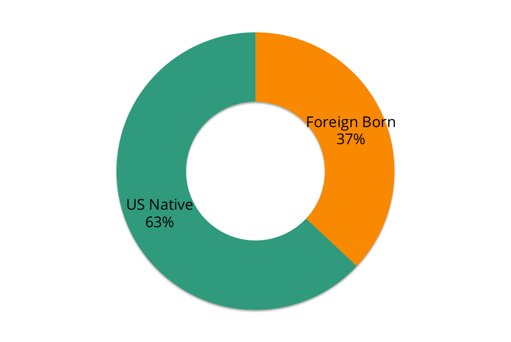

Brief Overview
There are 25,264 restaurants included in the dataset for our analysis. For this analysis, we had to make several assumptions:
- The restaurant dataset included all restaurants in New York City.
- The scores in the restaurant dataset paint an accurate picture of restaurant cleanliness.
- The scores for each restaurant are independent and have no effect on the scores for other restaurants.
Mean Score by Cuisine Type

Mean Score By Borough

Foreign Born Population By Borough



Household Income By Borough

Median Income in New York